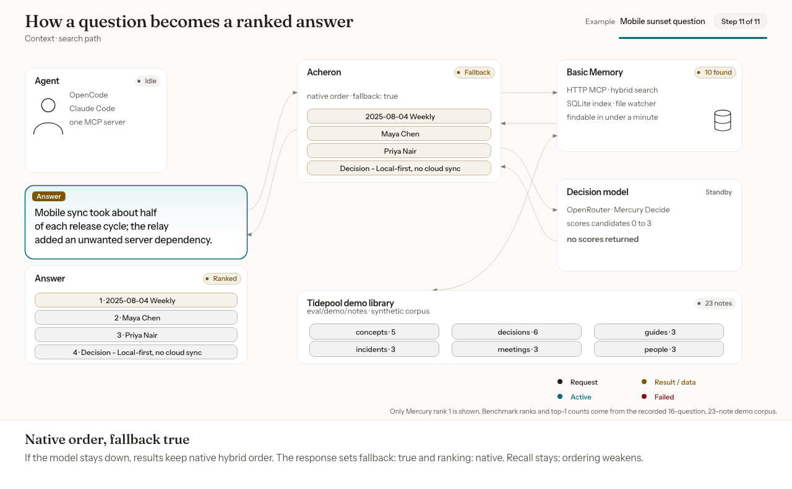
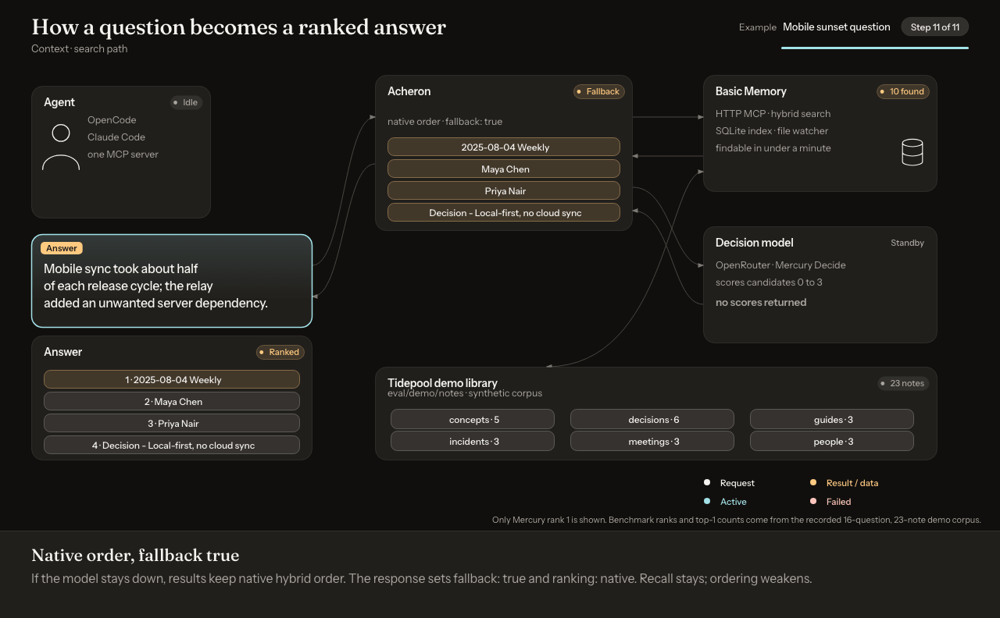
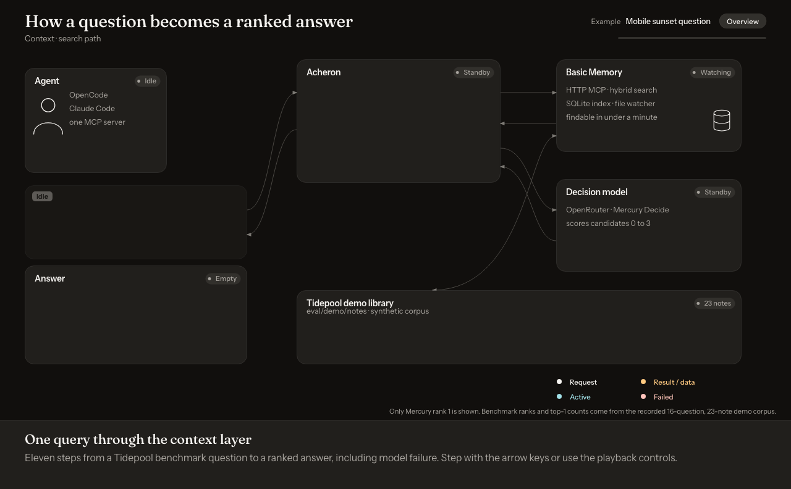
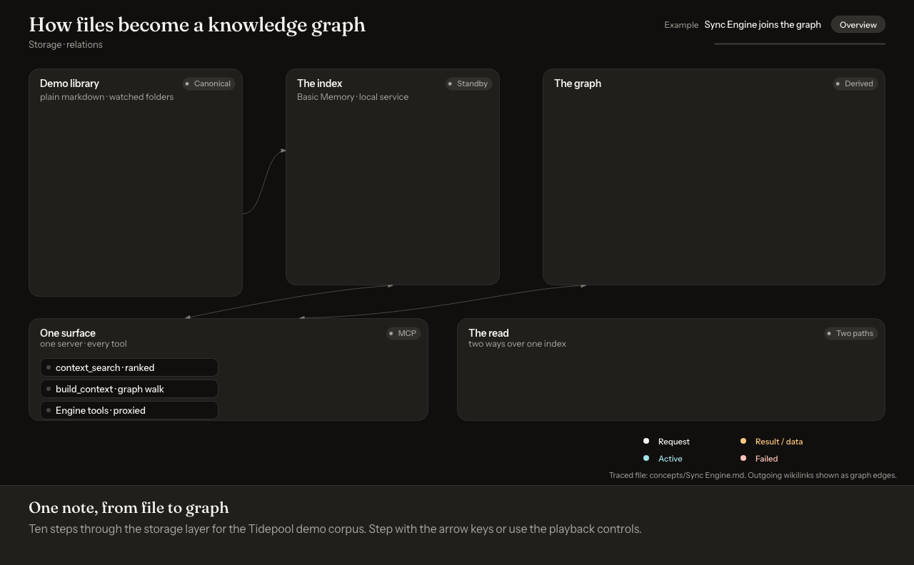

Too many tools.
Basic Memory's own MCP server exposes around 27 tools, including two overlapping search verbs. Every turn the agent has to choose, and the weaker path is always selectable.
search_notes search
Reference implementation · MCP memory server
Acheron sits in front of Basic Memory: one search verb, a clean tool list, and reranking that fails open.
A reference implementation, not a product. MIT licensed, alpha, no support promise. Written to be read, run and adapted.


Agents wired to a personal knowledge base hit two problems.
Basic Memory's own MCP server exposes around 27 tools, including two overlapping search verbs. Every turn the agent has to choose, and the weaker path is always selectable.
search_notes search
Hybrid search finds the right notes, but hub pages, person pages and passing mentions outrank the note that answers the question. On the demo set in the repository, native search put the expected note first in 7 of 16 questions.
That figure comes from 23 synthetic notes and 16 hand-labelled questions. It shows the shape of the problem, not its size on your notes.
Every response says how it was ranked, so the agent can tell a reranked answer from a fallback.

Motion is off in your settings. Step through with the explainer controls after you open it at desktop width, or read the steps below.
Illustrative scores; synthetic demo library.
context_search is the only search verb. It takes a query, the engine's filters, or both.fallback: true.ranking: "native".The sample is illustrative. It shows the response fields without quoting the explainer's on-screen numbers.
{
"query": "how do we handle sync conflicts?",
"ranking": "model",
"fallback": false
}Acheron discovers the engine's tools when it starts and passes them through under their original names, with their parameter schemas and safety annotations intact. Your client's permission prompts keep working.
Three tools are hidden. search_notes is folded into context_search, because two search tools means a decision on every turn. search and fetch are adapters for ChatGPT connectors and do nothing for other clients.
Remove Basic Memory's own entry from your client's configuration. Acheron proxies it.
context_searchThe only search: query, filters, or both
The repository ships a synthetic corpus of 23 notes for a fictional photo-sync project, and 16 labelled questions. Each row counts the questions where the expected note came back first, and in the top three.
| Method | First | Top three |
|---|---|---|
| Native hybrid search (engine default) | 7 of 16 | 12 of 16 |
| Basic Memory's built-in local reranker | 12 of 16 | 14 of 16 |
| Acheron with Mercury Decide | 14 of 16 | 15 of 16 |
| Acheron stacked on the built-in reranker | 15 of 16 | 16 of 16 |
Read this before you quote it. This is 23 synthetic notes, 16 questions, hand labels and one corpus. A difference of one to three questions is within noise. Basic Memory's built-in reranker is strong and free. Acheron's case is not better ranking. It is the single surface, the fail-open contract, and evidence you can rerun.
Rerun it without installing the engine. You need an OpenRouter key.
uv run python eval/benchmark.py --replay eval/demo/candidates.json --provider mercury --delay 3.2Acheron retries once on a rate limit or server error. After that, or with no key set, results come back in native order with fallback: true. This covers the reranker only. If Basic Memory itself is down, search returns an error.
One retry, then native order
Results are capped at 25 and candidates at 50 per call, and the rerank timeout is bounded. One request cannot inflate payload size or provider usage.
25 results, 50 candidates, bounded timeout
Note text reaches the ranking model labelled as untrusted evidence to score, not instructions to follow, and the search tool tells your agent the same. This is a prompt-level guard, not isolation. Keep your client's tool permissions on.
Untrusted evidence to score, not instructions to follow
By default, a search with a query sends that query, each candidate's title and up to 500 characters of each candidate's text to OpenRouter for scoring. Unless you name a project, the search covers every project you have registered. Filter-only searches make no model call.
Query, candidate titles, up to 500 characters per candidate
Set ACHERON_PROVIDER=none and reranking is off: no key, no outbound call, native order.
No key, no outbound call, native order
Acheron uses OPENROUTER_API_KEY if it is set. Otherwise it reuses the OpenRouter key that OpenCode stores on your machine, if there is one.
Environment first, then OpenCode
This part is Basic Memory's design, and Acheron leaves it alone. Your notes are ordinary markdown files in ordinary folders. The search index and the graph of links between notes are built from those files and can be rebuilt from them. Anything that writes markdown is a valid way to add a note.
Save a note and your agent can find it in under a minute.

Motion is off in your settings. Step through with the explainer controls after you open it at desktop width.
Illustrative scores; synthetic demo library.
You need Python 3.12 or newer, uv, and Basic Memory with a project of markdown notes. For reranking you also need an OpenRouter key. Without one the server still works and returns native order. Acheron is not on PyPI, so clone the repository first.
uv sync
scripts/start-bm-http.sh # Basic Memory's HTTP MCP service on port 8765
uv run acheron # the one agent-facing server (stdio)claude mcp add --scope user acheron -- /path/to/acheron/.venv/bin/acheron(~/.config/opencode/opencode.jsonc)"acheron": {
"type": "local",
"command": ["uv", "run", "--directory", "/path/to/acheron", "acheron"],
"enabled": true
}Do not also configure Basic Memory's own MCP entry. Acheron proxies it.
Clone it and rerun the benchmarkAcheron is a reference implementation. There is no support promise and no maintenance guarantee. Issues and pull requests are welcome on a best-effort basis.
The code targets Basic Memory's HTTP MCP server. There is no adapter for other storage engines. The part meant to travel is the pattern: discover the engine's tools, hide the duplicate search verb, proxy the rest unchanged, and rerank with a fallback.